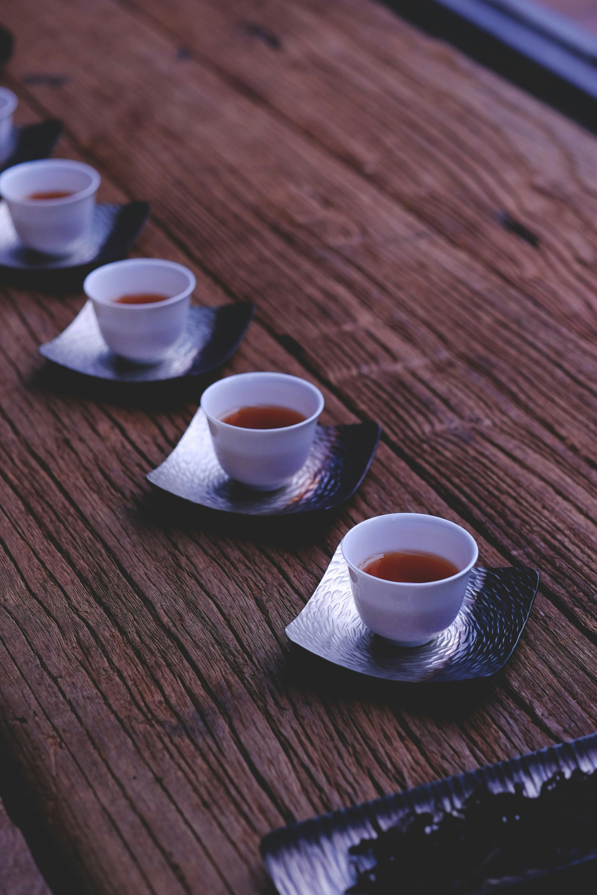

Our StoryBegins Here
NOMAD PREMIUM CAPSULES
We focused on the idea of traditional craftsmanship
A leading principle at NOMAD Tea has always been our commitment to time-honored craftsmanship. We aim to preserve the legacy of the artisanship that has been passed down through generations, while embracing modern techniques to create a unique tea experience.
From our intricate tea-making process to the dedication we put into every ingredient, we focus on quality that reflects the history and beauty of nature.
Whether you are steeping your first cup or enjoying a familiar favorite, each sip tells the story of a tradition that continues to evolve. At NOMAD, every step is taken with respect for the process, from the cultivation to the creation of our beloved tea bombs.

The essence
of cratsmanship
of cratsmanship
At NOMAD Tea, our roots trace back to generations of craftsmanship and family. Just as Andrea Di Maio paved the way with his exceptional vision in the world of winemaking, we are dedicated to creating an experience that transcends time.Every cup of tea we offer represents a deep connection to nature, a commitment to quality, and a celebration of age-old methods blended with modern innovations. As we move forward, we hold close the values passed down from our ancestors while continuously evolving to offer the world a new way to enjoy tea.
Innovation
at each sip

As we honor the timeless tradition of tea craftsmanship, we continue to innovate, incorporating modern methods and sustainable practices that pave the way for the future of tea. At NOMAD Tea, our journey is one of endless curiosity and passion to craft the perfect cup that unites heritage with sustainability.
Our commitment to sustainability drives every aspect of our operation—from our eco-friendly packaging to our dedication to sourcing responsible ingredients. We believe in crafting a product that not only celebrates nature’s finest elements but also respects the planet we call home.
Latest updates

What would you like to sea featured next ? Send us your ideas !
Explore More

Story of our capsules
Explore More

Explore our latest ingredients & discoveries
Explore More

What makes for the best experience ?
Explore More